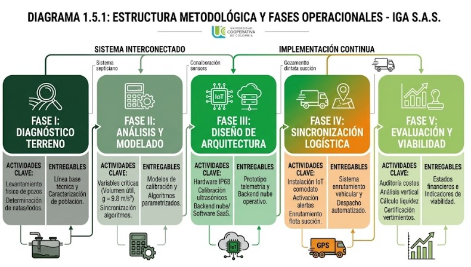
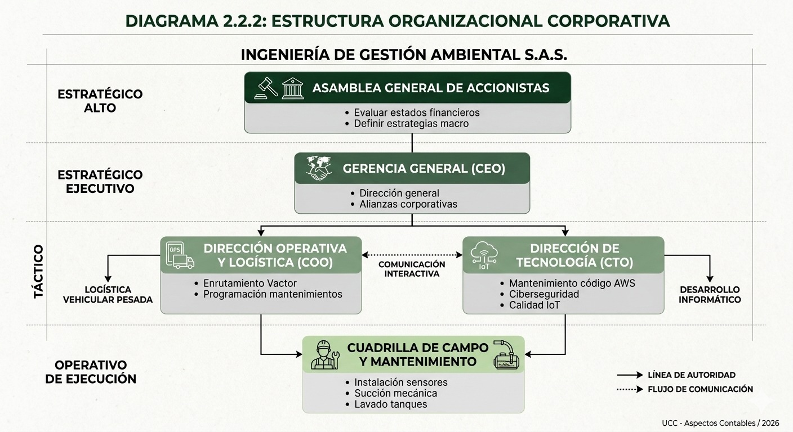

| Concepto de Inversión Inicial | Valor (COP) | Porcentaje |
|---|---|---|
| Constitución formal, registros mercantiles e inscripciones legales | $ 8.000.000 | 2.26% |
| Licencias de software corporativo y permisos sanitarios / ambientales CAR | $ 6.000.000 | 1.69% |
| Equipos de cómputo de alta gama y servidores locales de TI | $ 25.000.000 | 7.06% |
| Manufactura y componentes para lote inicial de 300 sensores IoT | $ 70.000.000 | 19.77% |
| Desarrollo de software a medida: plataforma web y aplicación móvil | $ 60.000.000 | 16.95% |
| Anticipo y enganche para contrato de Leasing de Camión Vactor | $ 120.000.000 | 33.90% |
| Fondo líquido de reserva — capital de trabajo primeros meses | $ 65.000.000 | 18.36% |
| TOTAL INVERSIÓN INICIAL REQUERIDA (CAPEX) | $ 354.000.000 | 100.00% |
| Descripción del Gasto Fijo Operativo | Valor Mensual (COP) |
|---|---|
| Arrendamiento de patio-taller logístico y oficinas administrativas | $ 4.500.000 |
| Nómina administrativa fija, gerencial y de soporte técnico | $ 14.500.000 |
| Nómina operativa de campo (Conductor especializado + auxiliar) | $ 5.500.000 |
| Canon mensual de financiamiento por contrato de Leasing vehicular | $ 6.800.000 |
| Conectividad IoT M2M e infraestructura de servidores AWS | $ 1.500.000 |
| Pólizas de seguro, marketing digital y pauta comercial | $ 2.200.000 |
| TOTAL GASTOS FIJOS OPERATIVOS MENSUALES (OPEX) | $ 35.000.000 |
| Detalle de Adecuación e Instrumental | Monto (COP) |
|---|---|
| Obras civiles de adecuación del patio logístico y trampas de grasas | $ 20.000.000 |
| Mangueras de succión reforzadas 4", acoples rápidos y bombas periféricas | $ 40.000.000 |
| SG-SST: Arneses de rescate, medidores de gas portátiles y EPP industrial | $ 15.000.000 |
| TOTAL INVERSIONES EN ADECUACIÓN | $ 75.000.000 |
| Mes Operativo | Ingresos (COP) | Egresos (COP) | Utilidad Mensual |
|---|---|---|---|
| Mes 1 — Enero | $ 45.000.000 | $ 42.000.000 | $ 3.000.000 |
| Mes 2 — Febrero | $ 55.000.000 | $ 44.500.000 | $ 10.500.000 |
| Mes 3 — Marzo | $ 70.000.000 | $ 46.500.000 | $ 23.500.000 |
| Mes 4 — Abril | $ 85.000.000 | $ 50.000.000 | $ 35.000.000 |
| Mes 5 — Mayo | $ 95.000.000 | $ 52.000.000 | $ 43.000.000 |
| Mes 6 — Junio | $ 110.000.000 | $ 54.500.000 | $ 55.500.000 |
| INGENIERÍA DE GESTIÓN AMBIENTAL S.A.S. — Al 31 de diciembre de 2026 | |
|---|---|
| Ventas Brutas Totales (SaaS + Servicios Físicos) | $ 980.000.000 |
| (-) Devoluciones, descuentos y garantías de hardware | $ 18.000.000 |
| Ingresos Netos Reales por Ventas | $ 962.000.000 |
| (-) Costos directos de operación (Tasas de vertimiento, combustible, insumos) | $ 255.000.000 |
| (+) Inventario inicial operativo de componentes electrónicos | $ 70.000.000 |
| (-) Inventario final de almacén al cierre de periodo | $ 40.000.000 |
| Costo de Ventas y Prestación Consolidado | $ 285.000.000 |
| UTILIDAD BRUTA OPERACIONAL | $ 677.000.000 |
| (-) Gastos operacionales, administrativos y depreciación | $ 455.000.000 |
| UTILIDAD ANTES DE IMPUESTOS (UAI) | $ 222.000.000 |
| (-) Impuesto sobre la Renta (35% s/ UAI) | $ 77.700.000 |
| ✅ UTILIDAD NETA DISPONIBLE DEL EJERCICIO | $ 144.300.000 |